The frame and the software
The Electric Objects EO2 is a screen in a picture frame, made in 2016 for hanging art on a wall. The frame relied on the company’s servers, and when they went away the EO2s stopped working. An EO2 left on its original software usually shows “Unable to reach Electric Objects servers”.
EO2 Linux is new software for the frame that needs no servers and no account. You control it from a phone on your home Wi-Fi. I built it for my own EO2, which runs it every day.


IllustrationIn these pictures the frames and the wall are drawn. The screens are captures from my frame, except the clock, which was rendered on a laptop.
What it shows
Everything on the frame is a piece in a gallery. You hang one or more galleries, and the frame moves through their pieces on a timer. Your own photos and videos go in from a phone.
Captures and laptop rendersUnless a section says otherwise, the stills are screen captures from my frame. The clips were rendered on a laptop from the same scene code, at the panel’s 1080×1920, with a made-up time and weather. Tap a clip for the full-size video.
Art
The project’s catalog has nine galleries of public-domain art, from the Art Institute of Chicago, The Met, the Cleveland Museum of Art, Wikimedia Commons and the Library of Congress. A picture close to the panel’s shape fills it and loses a little at the edges. One that would lose more than a fifth, such as a wide painting or a narrow pillar print, hangs whole with black bars.


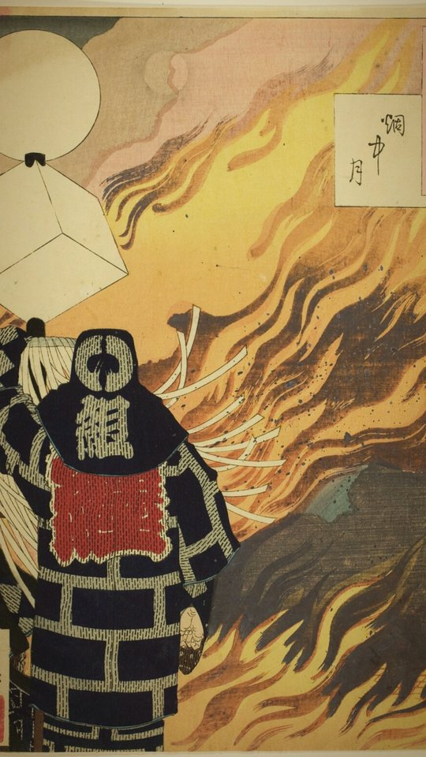

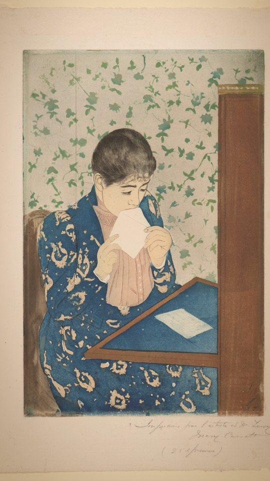

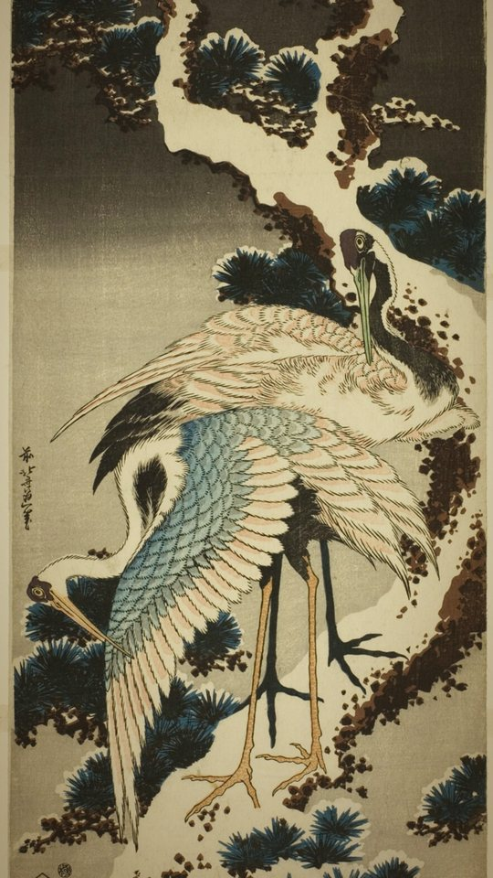

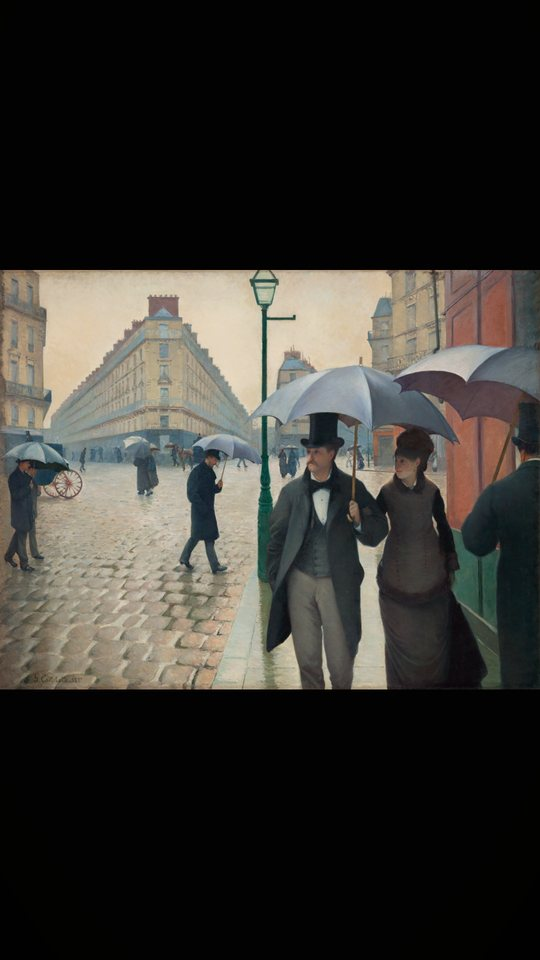

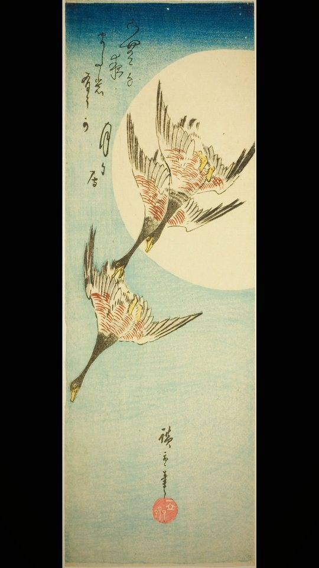

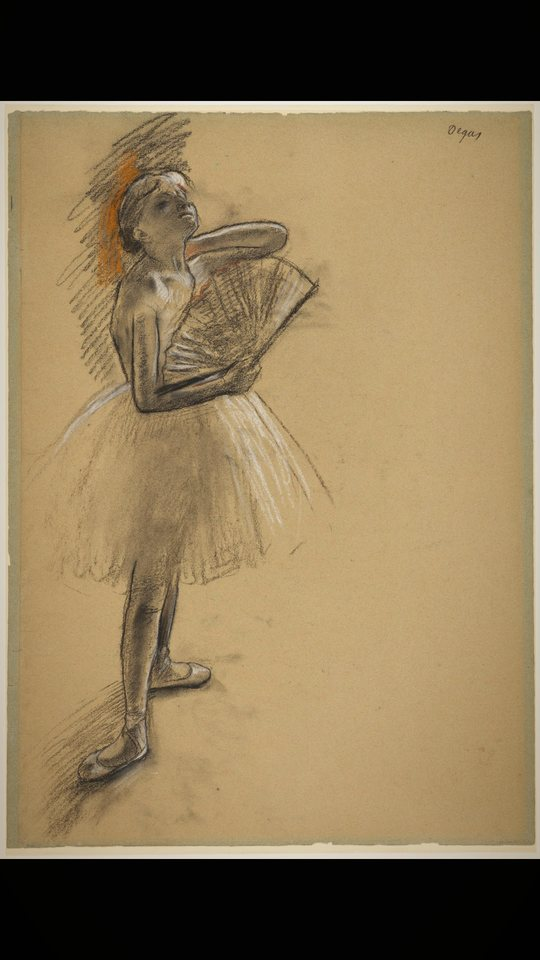

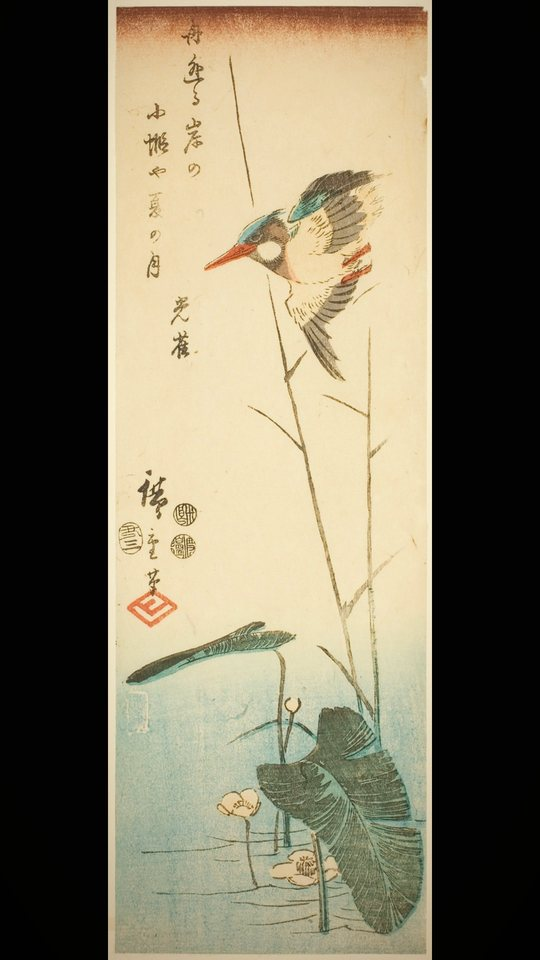

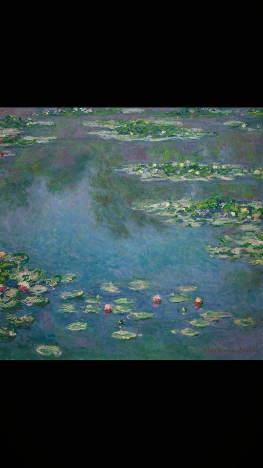
Captures · Gallery lightThese captures were taken with the Gallery light filter on, which warms the picture and shades its edges.
Clocks and weather
The clock faces come at full resolution and as dot versions. The weather faces show the current conditions, the next 24 hours or the next five days. On the hour, a clockwork moment can take the screen for 8 to 15 seconds and then hand it back. Mine plays the glockenspiel on even hours and the engraved cuckoo on odd ones. The EO2 has no usable speaker, so the bells and the cuckoo make no sound.

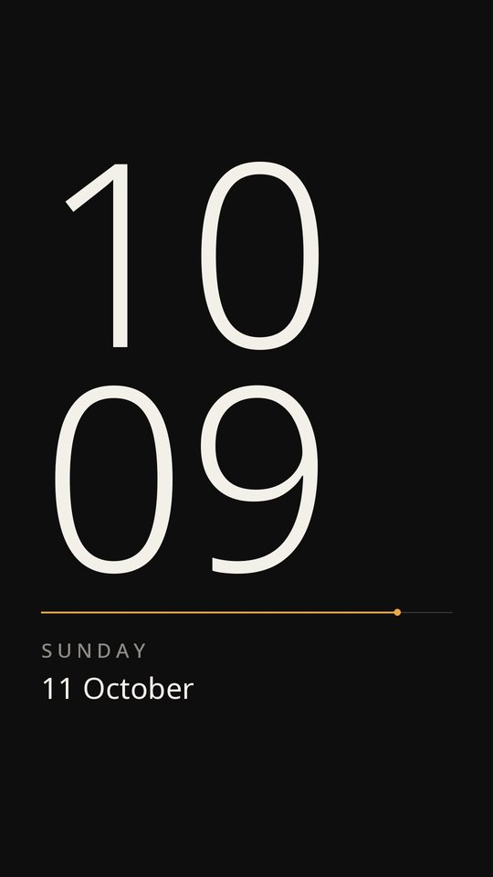

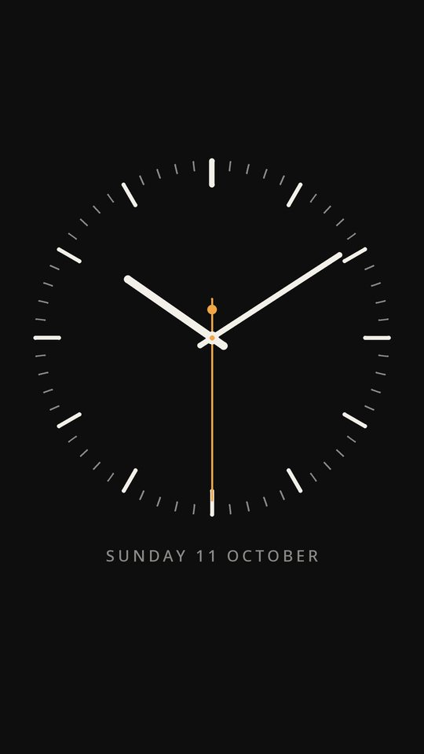

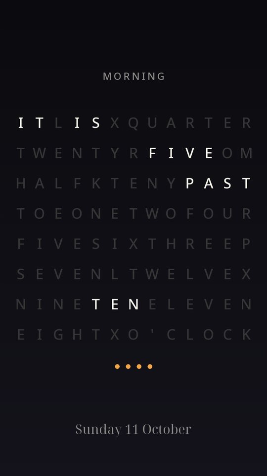
Laptop rendersThe three clock faces were rendered on a laptop at a made-up time and date.
Living scenes
Most of these follow the light outside. The koi pond and the shadow play use the real sun and weather. The mobile and the turntable change with the time of day.

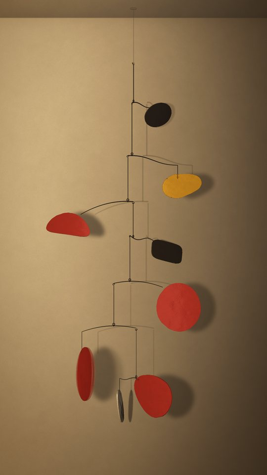
Machines
Each machine is a chain reaction down a tall wall, with a branch that splits and has to come back together before the end. The part about to move glows for a moment first, so you can follow it from across the room. Runs vary in small ways, like a ball stalling on a plank or the lighter’s first click failing.
Games
The frame plays these itself. Shots, misses and the marbles’ routes are worked out fresh each run.
Location and time of day
Pick your town in the app, or type coordinates. The frame keeps the location in its own settings and works out sunrise, sunset and where the sun and moon stand without going online. Those times are good to about a minute. For the weather it sends only the coordinates to Open-Meteo, every 15 minutes, with no account or key. Turn the weather off and nothing is sent.
Scenes use all of this. Clocks turn amber at night. The koi pond gets a lantern and the moon after dark, and rain rings when it rains. Art & weather picks a painting to suit the season, the weather and the hour. Quiet hours turn the screen off at night, and a schedule can switch the gallery, the filter or the screen for up to four parts of the day.
Without a location, sunrise and sunset are guessed as 6:30 a.m. and 6:30 p.m., and the weather faces say NO WEATHER and why. The frame has no clock battery, so after a power cut the clocks show “Waiting for the time” until it is back online.
Laptop rendersThese were rendered on a laptop with the player’s own code, for Paris with made-up weather.
Koi pond


Sky window
A photographic sky with the sun and moon where they really stand, the stars, and clouds taken from the forecast.


Weather now


Shadow play
The real sun places the patch of light and sets its color, white at noon and gold when the sun is low.

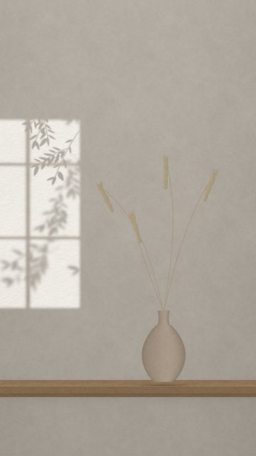

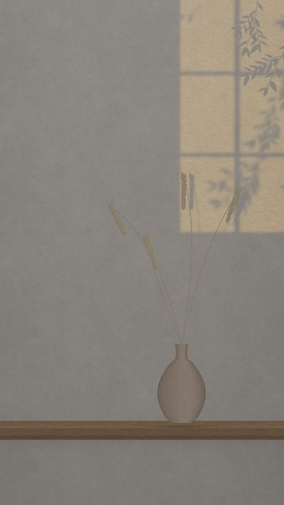
Filters
Everything the frame shows passes through one filter. Original leaves the picture alone. The rest come in five families: Light, Film, Print, Mat and Pixel. You can set a filter for the whole wall, for one gallery or for a single piece, and the schedule can change it, for example to Evening from 9 p.m.
Some filters only touch some pieces. Risograph and Newsprint change still pictures only, film grain doesn’t show on anything that moves, and the picker grays out a filter that would do nothing to the piece on the wall.
Laptop rendersThese were rendered on a laptop through the player’s own code. The picture is Hiroshige’s Plum Garden at Kameido, cropped to fill the panel.

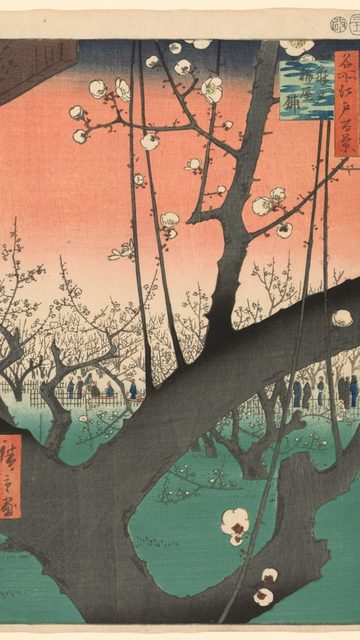

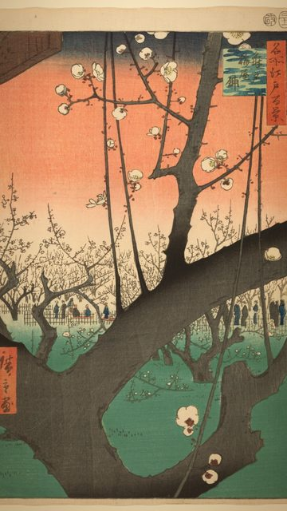

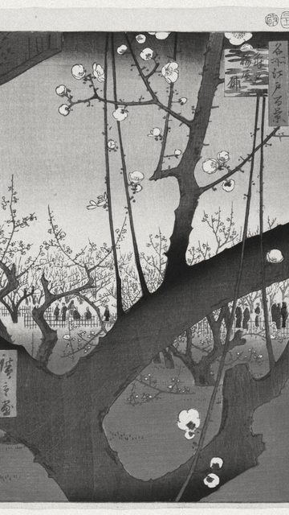

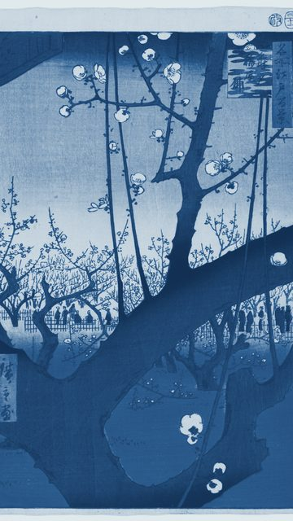

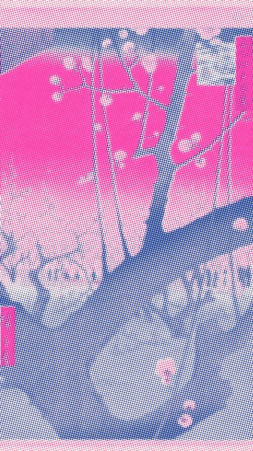

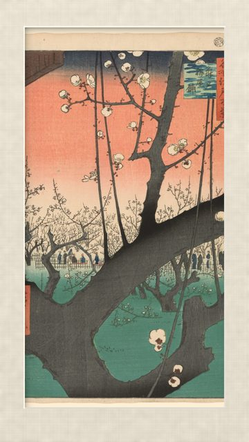
Pixel filters
The Pixel filters redraw pictures and scenes as a grid of dots, 54 across and 96 down by default. Besides LED dots, others copy old screens: a vacuum fluorescent display, a green handheld LCD, CRT scanlines, an amber terminal and a 16-color fantasy console. Each keeps its own settings for dot shape, spacing and glow, and all of them run scenes at up to 30 frames a second.
Laptop rendersThese were also rendered on a laptop through the player’s own code. The subject is the ocean sunset, one of the original pixel scenes.

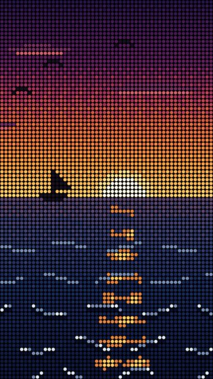

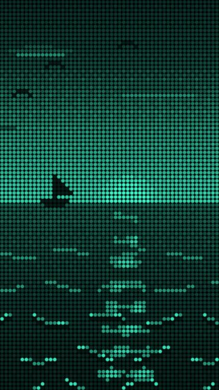

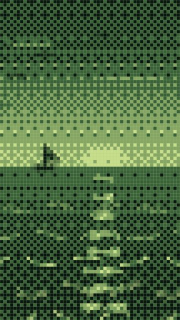

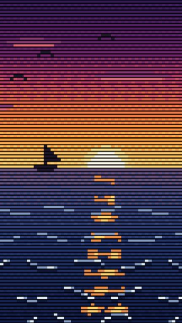

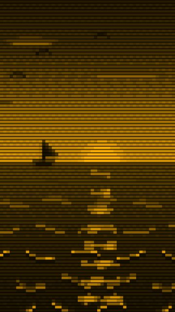

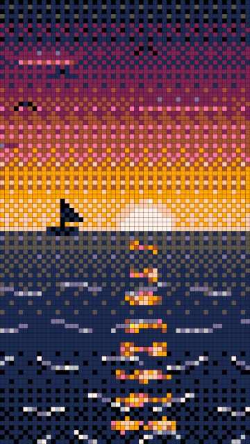
The phone app
The app is a web page that the frame serves itself. Open eo2.local on a phone on the same Wi-Fi and add it to the Home Screen. There are three tabs: Control, Collection and Settings.
Control is the remote, with Previous, Favourite, This piece and Next, and an Up next row with Skip. The Collection holds the galleries, sorted into wings, and takes photos and videos from the camera roll. Leave a note puts a short message over the art for a minute, in one of seven styles, such as LED letters or a newspaper headline. With Now playing set up, the frame can show the track you’re playing on Jellyfin, Spotify or Home Assistant. A PIN is optional. Once it’s set, every change needs it.
Demo copyThe screenshots come from a demo copy of the player on a laptop, with only public content and a made-up date and place.


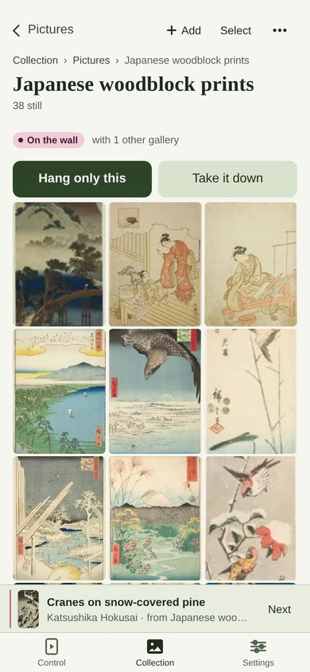


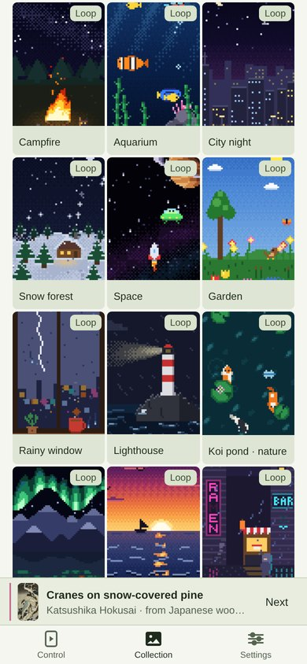

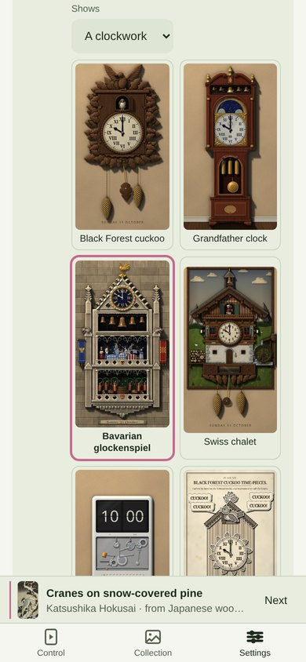
Adding your own
Packs, scenes, sources and web pages are all plain files, and the frame has an HTTP API for everything the app does. None of this is published yet. When the source code and the project catalog are public, this page will link to them.
Packs and catalogs
Galleries come as packs. A pack is one .eo2pack file, a zip with a manifest, previews and the pieces, and each piece can carry its title, credit, license and source. A catalog is a plain index.json that lists packs. It can live on any static web host, on a computer at home or on the frame itself.
You add a pack from the app’s Catalog, from a file on your phone or from a link. The frame checks every file’s size and checksum before anything reaches the collection, and a pack goes in whole or not at all. Updating or removing a pack leaves the files you’ve edited alone.
The project’s catalog has eleven galleries so far. Two hold scenes. The other nine are public-domain art, and each work’s public-domain status is checked again at its source when the pack is built:
- Public domain paintings (28)
- Impressionists (34)
- Dutch and Flemish masters (33)
- Japanese woodblock prints (38)
- Old masters and Renaissance (35)
- Landscapes and skies (59)
- Western landscapes (66)
- Cabinet of art (69)
- Street art, public domain (56)

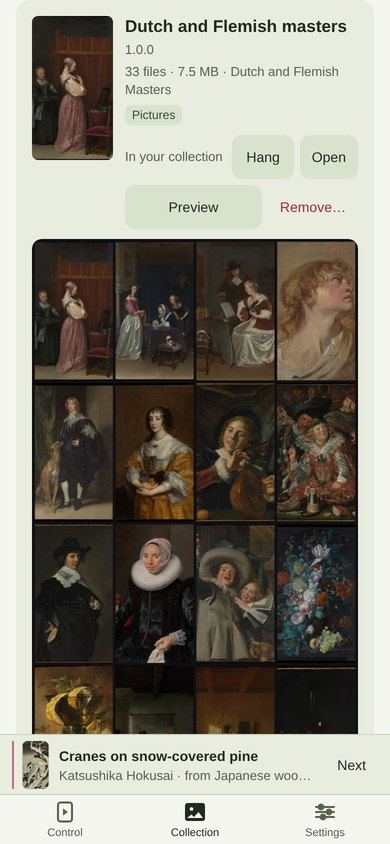
Scenes
A scene is a small Python file. A live scene defines frame(i), which returns the picture for frame number i as an array of colors. Put the file in a folder on the frame, or upload it from the phone (that needs the PIN and your OK), and add it to a gallery. Scenes can also draw at full resolution and read the time, the sun and the weather.
import numpy as np
COLS, ROWS = 54, 96
FPS = 30
_y, _x = np.mgrid[0:ROWS, 0:COLS].astype(np.float32)
def frame(i):
t = i / FPS
# three slow waves ...
np.sin(_x / 7.0 + t * 0.6, out=_v)
np.sin(_y / 9.0 - t * 0.8, out=_t)
np.add(_v, _t, out=_v)
np.sin((_x + _y) / 13.0 + t * 0.4, out=_t)
# ... summed: -3..3
np.add(_v, _t, out=_v)
# one palette turn across the range
np.multiply(_v, 256 / 6.0, out=_v)
# and the palette slowly turns
np.add(_v, 128 + i * 0.4, out=_v)
return PALETTE[_v.astype(np.int32) & 255]The core of plasma_live.py. The palette and the scratch arrays _v and _t are set up a few lines above.
A scene is a program with access to your network, so an uploaded one only runs after a PIN is set and you confirm it.
Sources and web pages
Integrations fill a gallery from somewhere else: the Art Institute of Chicago, The Met, Wikimedia Commons, RSS and other feeds, a folder, or an Immich server. A new source is one Python file that brings its own settings form to the app. The Lorem Picsum example is about 30 lines. Adding one needs SSH for now.
A web page can hang like a picture. A .web.json file points at any page, or at one of the bundled ones: weather, an agenda, a note, picture of the day, words for the day, Home Assistant tiles or generative art. The frame renders the page for the panel and refreshes it while it’s up.
HTTP API and Home Assistant
Everything the app does goes through a documented HTTP API, so a script can do it too. The API also stays compatible with the community Android launcher for these frames. This puts BACK AT 6 on the frame as a neon sign, with the last word blinking:
curl -H 'X-Requested-With: eo2' \
-d 'text=BACK AT 6' \
-d 'style=neon' -d 'effect=blink' \
http://eo2.local:8080/pixelThe frame refuses changes that don’t carry that header or the PIN, so a web page open in your browser can’t drive it. For Home Assistant the frame serves a ready-made package at /ha/package.yaml, with a now-showing sensor, a screen switch, a Next button and a gallery picker. Home Assistant can also push notes, and variables such as “door open” for scenes to show.
Bringing a dead EO2 back
The install runs once, from a computer with Bluetooth and Python 3.9 or newer. The frame stays closed and no SD card is needed. One program does the work in about 40 minutes, most of it waiting. In order, it
- sends your Wi-Fi details to the frame over Bluetooth, the way the old Electric Objects app did;
- backs up the frame’s original software onto the computer;
- copies EO2 Linux onto the frame;
- restarts the frame, which comes up with a Hello screen showing
eo2.localand a QR code.
Scan the code and the Set-up assistant on the phone takes you through eight short steps: a name for the frame, the galleries to hang, and Home Assistant if you use it. With the phone part, the whole job takes about an hour.
EO2 Linux is a small Alpine Linux system on the frame’s own kernel. It boots from the recovery partition and leaves the original Android in place. If EO2 Linux fails to start three times in a row, the frame goes back to Android by itself, and a microSD rescue card is the last resort. The worst case is that Android starts again, which is where a dead EO2 already is.

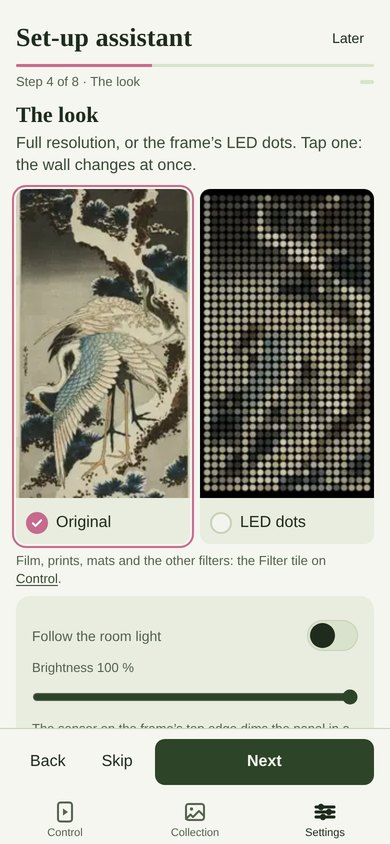
Status
- EO2 Linux isn’t released. The code, the installer and the catalog aren’t public yet, and this page will link to them when they are.
- The installer has run end to end from a Linux computer. From Windows, Bluetooth contact with the frame works but the Wi-Fi hand-over hasn’t been run. From a Mac, Bluetooth hasn’t been tried on a real frame.
- Only the EO2 is supported. The EO1 is different hardware, and the installer refuses it without changing anything.
- Updating means running the installer again. There are no over-the-air updates yet.
- The hardware
- An Amlogic S805-family chip with four 32-bit ARM Cortex-A5 cores at up to 1.6 GHz, under 1 GB of RAM, 7.6 GB of storage with about 4 to 5 GB free for art, a 1080×1920 portrait panel, 2.4 GHz Wi-Fi and a 12 V 3 A power supply. There is no usable speaker.
- The software
- Alpine Linux (armhf) on the frame’s original Linux 3.10 kernel. The player is Python 3.12 with numpy and Pillow, with some C and NEON code for drawing the dots and copying frames to the screen.